Porto
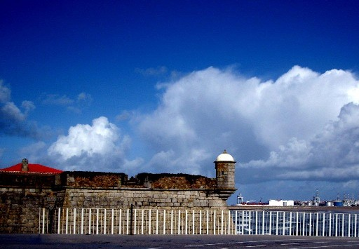
Le Fort Saint-Jean à l'embouchure du Douro. Au fond, Foz de Douro
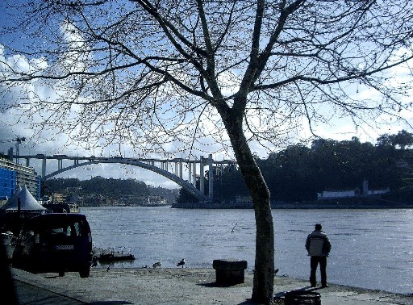
Le pont-autoroute d'Arrábida. Vue générale de Porto
Maritime dans l'âme, imprégnée de traditions navales et commerciales, Porto a joué un rôle clé dans les expéditions portugaises du XVIème siècle.

Porto: Édicule public
Cependant, Porto ne s'est vraiment épanouie que quatre cents ans plus tard à la faveur du florissant commerce du porto et de l'entregent des marchands anglais dont témoignent ces toilettes publiques qui sont un cadeau de la Reine Victoria!
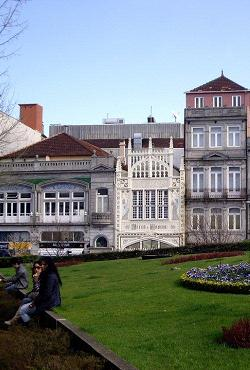
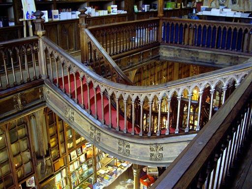
Porto: Librairie Lello


Porto: Librairie Lello
Située au cœur de la ville haute, rue des Carmélites, la librairie Lello et frère est la librairie la plus connue de Porto, une extraordinaire curiosité néogothique datant de 1906. La structure est de béton armé et le plafond de verre dépoli. La décoration est en stuc façon bois de l'architecte d'intérieur français Xavier Estèves. Ce bâtiment est classé "patrimoine national".
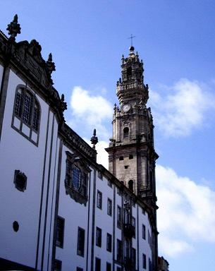
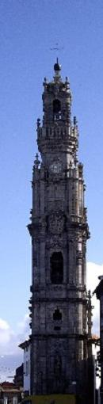
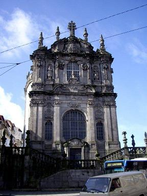
L'église et la tour des Clercs
La tour de l'Église des Clercs fait la joie des photographes. Cet ensemble ovale et compact de style baroque a été réalisé vers 1740 par l'italien Nicolas Nazoni . La tour, haute de 76 mètres, offre, paraît-il, une vue superbe. Mais il faut franchir 225 marches! Nous nous sommes abstenus...
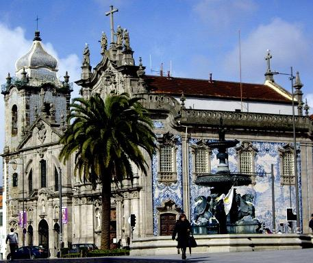
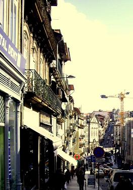
Les églises "jumelles" du Carme et des Carmélites. - La rue des Clercs prolongée par la rue du 31 Janvier
Le vieux quartier de Porto est classé au patrimoine mondial de l'humanité. L' église baroque du Carme dont la fresque latérale d'azulejos, réalisée par Silvestre Silvestri, figure la prise de voile de Carmélites jouxte l'église des Carmélites qui mêle le néoclassique au baroque.


La Place de la Liberté et la Place du Général Delgado
La
place de la Liberté
, dominée par la statue équestre de Pierre IV, est reliée à la place Delgado (au fond) par des avenues bordées de sièges de banques et de grandes sociétés. L'ensemble est dominé par l'hôtel de ville (Paços do Conselho).
La place en amont est le nœud principal du réseau d'autobus. La gare ferroviaire de Saint Benoît est à deux pas seulement.
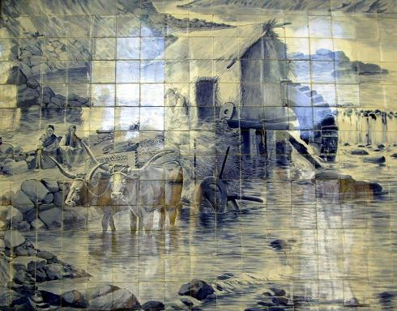

Les azulejos de la gare São Bento. Au premier plan, notre guide pour Porto: Ricardo.
Dans le hall de la gare de São Bento, une grande fresque d' azulejos , réalisée par Jorge Colaço dans les années 1930, illustre la vie quotidienne dans la région, ainsi que les principales batailles impliquant le Portugal. Elle compte quelque 20.000 carreaux.
La Ribeira
Bien qu'elle soit située à l'intérieur des terres, non loin de la côte, la vieille ville de Porto évoque, par son atmosphère, son histoire et sa vie quotidienne, un port (porto) méditerranéen. En particulier le quartier de la Ribeira (la "rive" du Douro), avec ses ruelles pentues et sinueuses. La cathédrale en est l'un des principaux ornements.
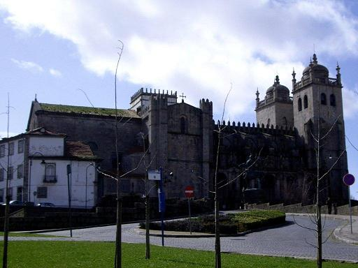
La Sé (cathédrale) de Porto


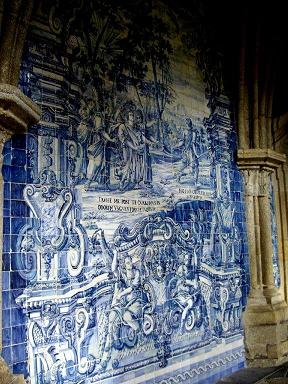
Vimara Peres. La Sé: ND de Vendôme et la fresque du cloître

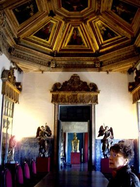

Le Cloître, le Chapitre et la chapelle du Saint-Sacrement
La
cathédrale
s'élève sur une colline rocheuse. Elle est faite du solide granit gris dont regorge le pays et avec ses créneaux et ses modillons, témoigne de l'ardeur guerrière de ses bâtisseurs du XIIème siècle. Elle fut entièrement restaurée, fin XVIIème siècle par l'Italien Nazoni à qui l'on doit aussi le palais épiscopal voisin.
La
chapelle du Saint Sacrement
abrite un tabernacle en argent ciselé, fabriqué par étapes de 1632 jusqu'au XIXème siècle. Une statue du XIVème siècle, apportée par des Tourangeaux,
N-D de Vendôme
, trône dans une niche.
Dans le cloître attenant, les arches gothiques séparent des panneaux d'azulejos datant de 1731 illustrant le Cantique des cantiques et la vie de la Vierge.
Le chapitre du XVIIème siècle abrite le trésor de la cathédrale. Il est orné d'un somptueux plafond à caissons.
Près de la Sé se dresse la statue équestre de Vimara Peres, premier Comte de Portucale, né en Galice, en 820, mort en 873, qui reprit Porto et Gaia aux Maures.
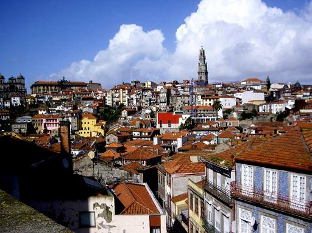
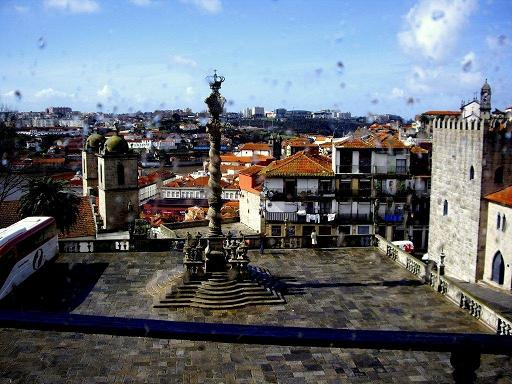
La vieille ville vue depuis la cathédrale
Depuis la cathédrale on a une vue imprenable sur Porto. Sur la photo de gauche ci-dessous, on voit de gauche à droite, l'église São Francisco et la Bourse (que nous n'avons pas visitées) et on reconnaît la Tour des Clercs.
Sur la photo de droite, on voit le parvis de la Sé et la tour qui abrite l'office de tourisme.

Les quais de la Ribeira
On accède au Douro en traversant des quartiers pittoresques grouillant d'enfants et de pigeons et décorés de linge mis à sécher aux fenêtres. Les bars et restaurants des quais de l'Estive et de Ribeira sont aménagés dans des arcades. Sur l'autre rive, à
Vila Nova de Gaia
, se trouvent les chais des principales marques de Porto. On y accède par le
Pont Louis Ier
, construit en 1886 par Théophile Seyrig, élève d'Eiffel qui est l'auteur du pont Dona Maria Pia, situé plus en amont.
Les traditionnels bateaux à voile dits "rabelos" qui servaient au transport des fûts de porto, sont aujourd'hui motorisés pour transporter les touristes.
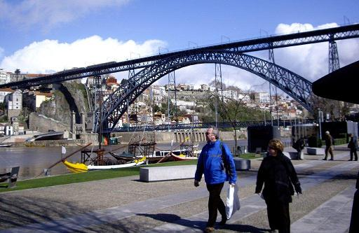
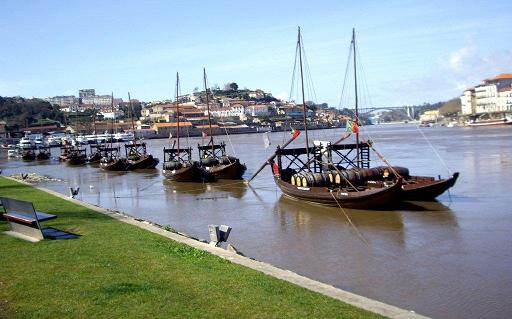
Le Douro, ses ponts et ses "rabelos"
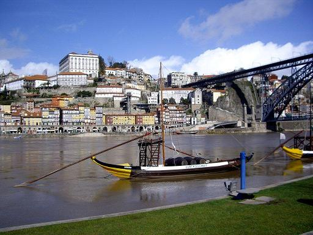
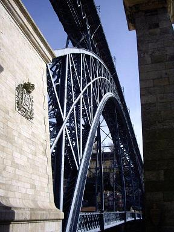
Le Quai de Ribeira vu de Vila Nova de Gaia et le pont Louis Ier


Le quai de Ribeira et les ponts de Porto (pont neuf de l'Infante, Pont Maria Pia (Eiffel) et pont de l'autoroute, visible tout au fond)
Le vin de Porto
La production du
vin de Porto
est circonscrite à la vallée du Douro. Les vins issus des cépages locaux sont assemblés et travaillés pour donner le vin doux fortifié connu sous l'appellation de "Porto". En cours de fermentation, quand la moitié du sucre contenu dans le moût est transformée en alcool, on ajoute une bonne proportion d'alcool de qualité qui arrête la fermentation. Puis les étapes suivantes varient pour donner selon le cas, un Ruby, un Tawny ou un Vintage.
Nous avons droit à une dégustation dans les caves de la compagnie Cálem.

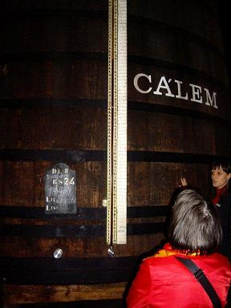
Les fûts de vieillissement. Les 4 personnes de notre groupe dégustent un porto rouge et un porto blanc.
Après le repas ("demi-doses" de poulpe!) sur le quai de Ribeira, dans une taverne recommandée par nos guides et fréquentée par des hommes politiques et des vedettes dont les photographies ornent les murs, nous nous dirigeons vers Aveiro, également sur la côte, à 60 km plus au sud.